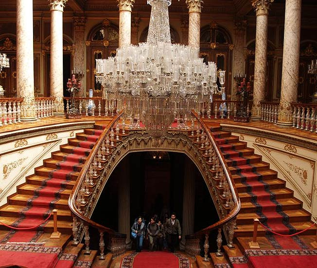
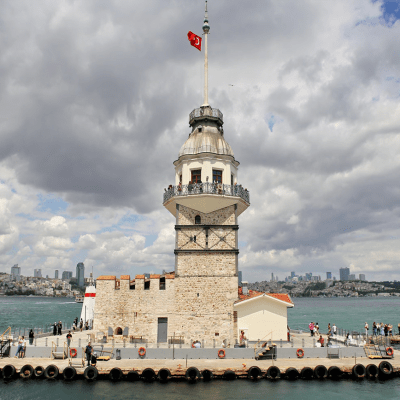

2 Kıta 1 Şehir : İstanbul
İstanbul kıtalararası bir şehir olup, Avrupa'daki bölümüne Avrupa Yakası veya Rumeli Yakası, Asya'daki bölümüne ise Anadolu Yakası veya Asya Yakası denir. İstanbul şehri, nüfus açısından Avrupa'da birinci, dünyada ise altıncı sırada yer almaktadır. 31 Aralık 2019 sayımlarına göre 15,52 milyon nüfusu vardır. Toplam ilçe sayısı 39 idir.
Dünyanın en eski şehirlerinden biri olan İstanbul, 330-395 yılları arasında Roma İmparatorluğu, 395-1204 yılları arasında Bizans İmparatorluğu, 1204-1261 yılları arasında Latin İmparatorluğu,1261-1453 yılları arasında tekrar Bizans İmparatorluğu ve son olarak 1453-1922 yılları arasında Osmanlı İmparatorluğu'na başkentlik yaptı. Ayrıca İstanbul, Hilâfetin Osmanlı İmparatorluğu'na geçtiği 1517'den kaldırıldığı 1924'e kadar İslam dünyasının da merkezi oldu.
Karadeniz ile Marmara Denizi'ni bağlayan ve Asya ile Avrupa'yı ayıran İstanbul Boğazı'na ev sahipliği yapması nedeniyle, İstanbul'un jeopolitik önemi oldukça yüksektir. Bugün tamamına yakını doldurulmuş olan ya da kaybolan doğal limanları vardır. Bu özellikleri yüzünden bölge toprakları üzerinde uzun süreli egemenlik anlaşmazlıkları ve savaşlar yaşanmıştır.
İstanbul'da Gezilecek Tarihi Mekanlar
Ayasofya (Hagia Sophia)
İstanbul’un gözbebeği Tarihi Yarımada’yı gezmeye başlamak için en doğru yer Ayasofya Müzesi.
Dünyanın en tanınmış ibadethanelerinden biri olarak aynı yerde 3 defa inşa edilen Ayasofya, 1935’ten beri müze olarak her yıl milyonlarca insan tarafından görülüyor.
Ayasofya Müzesi yaz döneminde 09.00-19.00, kış döneminde 09.00-17.00 saatleri arasında Müzekart ile ziyaret edilebiliyor. Müze, Ramazan ve Kurban bayramlarının birinci günü yarım gün ziyarete kapalı.
Kapalı Çarşı (Grand Bazaar)
Tarihi Yarımada’nın en gözde duraklarından biri de Beyazıt’ta 550 yıldır ayakta duran Kapalı Çarşı. Yabancıların Grand Bazaar adıyla tanıdığı Kapalı Çarşı, içinde kaybolacağınız sokakları ve dünya altın piyasasına yön veren kuyumcularıyla ünlü.İstanbul’un en eski çarşısının içinde alışveriş yapmanın yanı sıra, burada satılan her şeyin İstanbul’un kadim ruhunu yansıttığını göreceksiniz.
Rumeli Hisarı
Fatih Sultan Mehmet’in İstanbul’un Fethi esnasında Karadeniz’den Bizans’a gelebilecek yardımları kesmek amacıyla 90 günde yapılan Rumelihisarı, Boğaz’ın iki kıyısının birbirine en çok yaklaştığı nokta’da Anadolu Hisarı’nın tam karşısında yer alıyor.Bir zamanlar Rumelihisarı Konserleri gibi açık hava etkinliklerinin gerçekleştiği hisar, günümüzde müze olarak ziyarete açık. Rumeli Hisarı Müzesi’nde İstanbul’un fethinde kullanılan toplar, gülleler ve Haliç’i kapattığı söylenen zincirin bir parçası hala sergileniyor.
At Meydanı (Hipodrom)
Bizans Dönemi’nde at yarışlarının gerçekleştiği gerçek bir hipodrom olan tarihi alan, bugün Sultanahmet Meydanı’nda At Meydanı olarak tanınıyor.
Üzerinde Mısır hiyerogliflerinin yer aldığı Dikilitaş, Yılanlı Sütun ve Alman Çeşmesi bu alanda yer alıyor. Ayrıca Bugün Türk ve İslam Eserleri Müzesi olarak ziyaret edebileceğiniz İbrahim Paşa Sarayı da bu meydana bakıyor.
Haydarpaşa Tren Garı
Anadolu’dan gelen trenlerin son durağı olan Haydarpaşa Tren Garı, 908’de İstanbul – Bağdat Demiryolu hattının başlangıç istasyonu olarak inşa edildi.Son yıllarda Haydarpaşa, Kitap Fuarı gibi kültürel aktivitelerle de adını duyuran gar, içerisinde yer alan restoranlarla da Kadıköy’de gezilecek yerlerin en önemlisi.
Dolmabahçe Sarayı

Osmanlı Padişahı Sultan Abdülmecit tarafından Boğaz kıyısında 1856’da yaptırılan bu Dolmabahçe Sarayı, Batı mimarisinden izler taşıyan ihtişamlı görüntüsüyle İstanbul’un en önemli simge yapılarından biri.Türkiye’deki en büyük sarayı olan Dolmabahçe Sarayı, Atatürk’ün de son günlerini geçirdiği mekan olması nedeniyle farklı bir manevi değere de sahip.
Kız Kulesi

İstanbul’un en romantik simgelerinden olan Kız Kulesi, 2000 yılında restore edilerek bir restoran olarak hizmet vermeye başladı. Üsküdar sahilden teknelerle 5 dakikada ulaşılan Kız Kulesi’ni gezmek için restoranda yemek yeme şartı bulunmuyor, yalnızca tekneyle geçiş ücretini ödeyerek, Kız Kulesi’ni yakından görebilirsiniz.
Üsküdar Salacak ve Kabataş’tan Kız Kulesi’ne tekne ile gitmek için Üsküdar Salacak iskelesinden 09.00-18.45 saatleri arasında her gün; Kabataş’tan 09.00-18.45 saatleri arasında sadece hafta sonu seferler yapılıyor.
İstanbul'da Gezilecek Camiler
Ortaköy Camii
Neo-Barok mimari tarzda inşa edilen Ortaköy Camii, Sultan Abdülmecit tarafından Nigoğos Balyan ve Garabet Amira Balyan’a yaptırılmış. 1853’te inşası tamamlanan cami, alışılagelmişin dışında büyük pencereleriyle Boğaz’ın rengarenk ışıklarının içeriyi aydınlatmasıyla muhteşem bir görünüme kavuşuyor.
Eyüp Sultan Camii
 İstanbul’daki en önemli camilerden biri olan Eyüp Sultan Camii, Haliç’te yer alıyor. Hz. Muhammed’in bayraktarlığını yapan Ebu Eyyûb el-Ensarî’nin 7. yüzyılda İstanbul kuşatması esnasında şehit düşerek buraya defnedildiğine inanılıyor. Eyüp Sultan Türbesi’nin hemen yanına inşa edilen Eyüp Sultan Camii İstanbul’un fethinin ardından 1458’de Fatih Sultan Mehmet’in emriyle yapılmış.
İstanbul’daki en önemli camilerden biri olan Eyüp Sultan Camii, Haliç’te yer alıyor. Hz. Muhammed’in bayraktarlığını yapan Ebu Eyyûb el-Ensarî’nin 7. yüzyılda İstanbul kuşatması esnasında şehit düşerek buraya defnedildiğine inanılıyor. Eyüp Sultan Türbesi’nin hemen yanına inşa edilen Eyüp Sultan Camii İstanbul’un fethinin ardından 1458’de Fatih Sultan Mehmet’in emriyle yapılmış.
Fatih Camii
İstanbul’un ilk selatin camisi yani sultan tarafından yaptırılan camisi olan Fatih Camii, İstanbul’un fethinden 10 yıl sonra Mimar Yusuf Sinan’a (Sinan-ı Atik) yaptırılmış. İstanbul’un 7 tepesinden 4’üncüsünde yer alan Fatih Külliyesi’nde medreseler, darüşşifa, kervansaray, imarethane, kütüphane ve hamam bulunuyor.Bizans İmparatorları’nın mezarlarının bulunduğu tepeye, inşa edilen cami, İstanbul’da Osmanlı Devri’nin başladığının en büyük göstergelerinden biri olarak tasarlanmış.
İstanbul'da Gezilecek Park ve Bahçeler
Belgrad Ormanı
Belgrad Ormanı için İstanbul’un akciğeri desek, abartmış olmayız. İstanbul’un kuruluşundan beri şehrin suyunu sağlayan bentleri, çeşmeleri ve zengin orman varlığıyla doğal bir cennet. Şimdilerde özellikle uzun koşu parkuruyla yeniden popüler yeşil alanlar arasına giren Belgrad Ormanı, İstanbul’da görülecek yerlerin başında geliyor.
Gülhane Parkı
Önceden büyük bir hayvanat bahçesine ev sahipliği yapan Gülhane Parkı, aslında Topkapı Sarayı’nın arka bahçesi olarak yüzyıllardır varlığını sürdürüyor. Göğe uzanan ceviz ağaçlarının altında güzel bir yürüyüş yapıp, çay bahçesinde tazecik bir çay içebileceğiniz Gülhane Parkı, İstanbul’un göbeğinde, Sultanahmet Meydanı’nın biraz altında kalıyor.
Emirgan Korusu
İstanbul ve lale kelimeleri yan yana geldiğinde akla ilk gelen yer elbette Emirgan Korusu. İstanbul Boğazı’nın ferah atmosferinde her yıl baharda binlerce lale ile renkten renge bürünen koru, her mevsim ayrı güzel. Emirgan Korusu’na nasıl gidilir diye merak edenler için Beşiktaş sahilinden Sarıyer’e giden tüm İETT otobüsleri Emirgan Korusu’ndan geçiyor. Ayrıca Taksim’den, Mecidiyeköy’den ve Zincirlikuyu’dan tek otobüsle koruya ulaşım sağlanıyor.